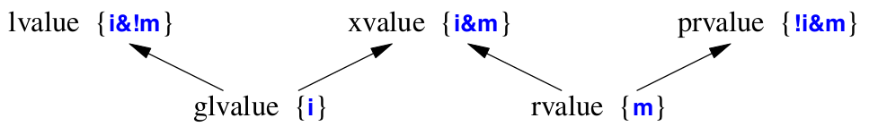

lvalue && rvalue¶
表达式可以分为 lvalue(左值) 和 rvalue(右值) 两种。
左值与右值的区别是左值具名，可以取址 并访问；而右值不具名，通常是临时的变量，不可取址，仅在当前作用域有效，可以被移动
对于函数及运算符，如果返回类型是左值引用类型(A&)，那么返回值是左值；若返回类型是原对象类型(A)，那么返回值就是右值
Expression |
Value category |
|---|---|
4 |
rvalue |
i |
value |
a+b |
rvalue |
&a |
rvalue |
*p |
lvalue |
++i |
lvalue(前缀自增运算符直接在原变量上自增) |
i++ |
rvalue(后缀自增运算符先拷贝一份变量，自增后再重新赋值给原变量) |
std::string(“oye”) |
rvalue |
str1+str2 |
rvalue(重载的+运算符返回的是一个临时的std::string对象而不是引用) |
vec[0] |
lvalue(重载的[]运算符返回类型为int&) |
m |
lvalue(引用了一个右值,但本身是左值) |
当然C++中表达式的分类还可以根据是否可移动及是否具名再细分。如果用m表示可移动(movable),用i表示具名(has identity), 那么表达式类型可以进一步细分为
